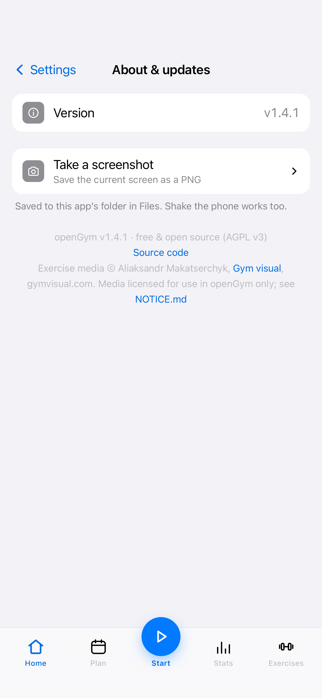

Why it did not work, and what was true instead
Most of the work was finding out which of the obstacles were real. Three of them were believed to be impossible and turned out to be a different problem entirely.
Capacitor cannot be built on Linux
True, and final. @capacitor/ios ships only .podspec files, so
SwiftPM cannot consume it; xtool builds SwiftPM only, and has no
actool or ibtool for the storyboard and icon catalog. The
workaround was to stop using it: openGym's Capacitor imports are all dynamic and
gated behind MOBILE, so they never reach a web bundle. Seven modules were
reimplemented in JavaScript against a single WebKit message handler, and openGym's own
application code is unmodified.
The Xcode download was truncated
92 bytes short — in the trailing metadata, not the payload. The file's own table of
contents declares the length it should be, so the shortfall was measurable rather than a
guess. xtool installed it without complaint and produced
iPhoneOS27.0.sdk.
Apple's Xcode archive still describes its own contents
The format is not what the references say. The table of contents sits at offset 28 rather
than at the end, which is why libarchive reports a perfectly good file as
corrupt, and the inner header does not parse as documented. Ignoring the header and
chaining the compression streams through the decompressor read all of it.
Screenshots off the phone are not available
Not from here. The usual tool needs a Developer Disk Image mounted on the device, and Xcode 27 does not ship one — Apple fetches them when a Mac attaches a phone. Decompressing the whole archive settled it rather than assuming.
The numbers that decided it
Each of these came out of measuring something, and each changed what got built.
What is on the phone
A full native shell: the app's own state mirrored to durable storage, scheduled workout reminders and streak milestones, a Keychain for the two secrets it holds, the share sheet for backups, and the print sheet for the weekly plan. Exercise demos are 6,554 images of a catalogue that never leaves the device.
The live camera QR scanner is not implemented. Photo import of a check-in code works, because the decoder the browser build already ships turned out to be pure JavaScript. Rebuilding ML Kit's full-screen camera UI was not worth the risk to a working app.

How a build runs
Two commands, on Linux, with no Xcode, no signing certificate held by hand and no Mac in the loop.
- Swift 6.4.1 and xtool 1.22.2The cross-platform Xcode replacement. Swift is not in Fedora's repositories; it comes from swift.org, and the closest published build is Fedora 41.
- A Darwin SDK from Xcode 27Built from the archive, slim, in about twelve minutes.
- The web bundleA phone-flavour Vite build with the native shims aliased in, plus 6,554 exercise stills.
- The appA SwiftPM shell that xtool turns into an .app, signed against a free Apple ID and installed over USB.
$ bash scripts/build-web.sh $ cd ios-shell && xtool dev run # Building for debug... # Build complete! (46.46 secs) # Installing to device: Stanley Sujith's iPhone
Credits
This page describes other people's software. All of it is worth using, and the first entry is the one that matters.
openGym — Duarte Santos
The self-hosted gym and bodyweight tracker this app is. Every workout, routine, set, progression rule, chart and screen is theirs, under the AGPL-3.0-or-later; the training logic is a set of pure functions with unit tests beside them, and it is the reason there is anything here to package. Also a 6,554-exercise catalogue, 19 languages, and roughly 1,800 commits maintained to a release every two weeks.
If you want the original, it is the better product and it runs on Linux, Docker, a NAS or
a Raspberry Pi in about four minutes: docker compose up. This page is only
about getting their code onto an iPhone, which is a narrower thing.
xtool — the xtool contributors
The cross-platform replacement for Xcode, MIT licensed. It parses Apple's Xcode archive, builds a Darwin Swift SDK from it, and links a SwiftPM package into a signed .app on Linux. Nothing on this page would exist without it — every step that was not a dead end was xtool doing something the documentation did not promise.
Release 1.20.1's notes mention Xcode 27 linking specifically, which is the version this build ended up using.
Licences
The parts are not all mine, and saying which is which is the point of this section.
- openGym
-
DuarteSantos8/openGym,
AGPL-3.0-or-later. Everything under
frontend/,api/,catalogue/andmcp/is theirs. - This page and this build
- The SwiftPM shell, the JavaScript shims, the tooling and these docs: AGPL-3.0-or-later, and additionally GPL-3.0-or-later. AGPL section 13 permits that dual offer explicitly. This page is GPL-3.0-or-later, © Stanley Sujith Nelavala.
- Exercise media
- © Aliaksandr Makatserchyk, Gym visual. Licensed for use within openGym, explicitly not redistributable as part of an independent app or website. It is excluded from the public repository entirely and is never committed, which is why a clone does not build without cloning openGym first.
- xtool, jsQR, WebKit
- The build tool is MIT. The fallback QR decoder is Apache-2.0. Both are credited in the repository's NOTICE.